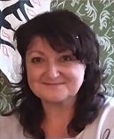
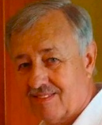

Alena Pisková
qvadro-joga@centrum.cz20 let se věnuje a učí TAO-TAI CHI. Cvičení pro krásu těla a zušlechtění duše.
Meditace v pohybu...
Na své cestě duchovního bádání a vývoje za PRAVDOU a POZNÁNÍM měla čest poznat vyjímečného člověka, který se stal jejím rádcem-poradcem i přítelem.
"Cest je mnoho - cíl je JEDEN. Je důležité, kam na své cestě poznání dojdeme. Mnohem důležitější však je skutečnost, v kolika SRDCÍCH zůstaneme ZACHOVÁNI."

Zdeněk Pešl
qvadro-joga@centrum.czJeho život již v dětství ovlivnilo sousedství léčitele a mystika, který jej vedl a pomáhal mu v sebepoznání i s meditací.
CÍLEM pro něho je "POZNÁNÍ A ZAŽITÍ PRAVDY"
Pravda taková jaká opravdu je ve skutečné nahotě. Ať se to líbí nebo ne!
V pozdějších letech se zabýval jógou. I zde měl štěstí a poznal ojedinělého člověka, který ho uvedl do "Brány Poznání". Umožnil mu získat VĚDĚNÍ, jakto doopravdy je. V současnosti tyto zkušenosti předává formou přednášek.
"Poznej sám sebe, stvoř sám sebe..."